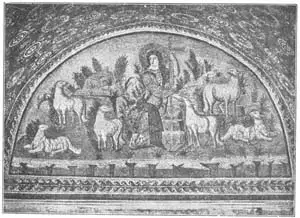

06
PICTURES OF CHRIST AND CHRISTIANS
基督画像和基督徒的画

THE name we know best, in all history, is that of Christ, and yet no one knows what He looked like. More paintings have been made of Him than of any man that has ever lived, but they are all imaginary. If we did have an actual picture of Him, it would probably be the most valuable picture in the world. The earliest picture of Him was made long after the time when He lived. It was painted by artists who never saw Him, so they had to guess how He looked.
The greatest city in the world at the time of Christ was Rome, Italy, and soon there were more Christians in Rome than in the country where Christ was born and lived. The early Christians were a secret society. Their society had to be secret, because the rulers of the people thought them dangerous and tortured them and even put them to death on the slightest excuse.
So the Christian society in Rome cut tunnels and cellar-like rooms —thousands of them—underneath the ground and there they held meetings. They were buried there, too, in places cut into the walls. These dark, damp caves, lighted only with small, dim lamps, were called catacombs. On the ceilings and sides of the catacombs the Christians painted pictures. One was a picture of Christ as the Good Shepherd, carrying a sheep across His shoulders. And where do you suppose they got the face they used for Christ? It was the picture of a Greek god!
Other pictures these early Christians painted were of Daniel in the Lion’s Den, Jonah and the Whale, and the Greek god Orpheus charming the wild animals with his magic music.
But most of the paintings in the catacombs were not what you would call real pictures. They were just decorations, but decorations that had some meaning to a Christian. They made pictures of a dove because that represented the Holy Ghost, which they believed came down from heaven in the form of a dove. They painted the cock that crew when Peter denied that he knew Christ. They painted an anchor which meant their religion was like any anchor that kept a boat in a storm from being dashed on the rocks. The anchor was their safeguard. They painted a fish because in the Greek language the first two letters were Christ’s initials. They painted a vine because Christ said, “I am the vine.” And so on.
About three hundred years after Christ died, a Roman emperor named Constantine became a Christian himself. Then, for the first time, the Christian society no longer needed to be secret. The Christians had no further fear of harm, so they came out of the catacombs to do their worshiping openly and built churches above ground and covered the walls with pictures and mosaics. Then for over a thousand years they painted pictures of people and scenes from the Bible.
The Greeks painted pictures chiefly of people without any clothes on, because they thought the human figure the most beautiful thing in the world and they did not want to cover it up. The Christian painters thought such figures immodest, and in the pictures they made they covered up the entire body with clothing, so that only the face, hands, and feet showed. They spent all their efforts in trying to make the face soulful and holy—not just beautiful. Often the background was painted in gold. Sometimes the pictures, instead of being painted, were made of mosaic. Paintings on plaster walls would peel and crumble and rub off, and mosaic would last. Mosaic pictures were often made on the floors of churches because such a picture made of stones was the only kind that would stand the tread of countless feet. It would not wear out, it would not wear off!

No.6 MOSAIC OF CHRIST, THE GOOD SHEPHERD（镶嵌画，《好牧人基督》）
Courtesy of The University Prints
But the best paintings the Christian artists made were tiny illustrations or decorations for their Bibles and holy books. Some of these pictures were no larger than a postage stamp. Most of them were made by the monks, pious men who gave their lives to the service of the Church. All books were written by hand (we call them manuscripts), for printing had not been invented. These pictures for books were called illuminations and were made in gold and bright colors and were much more beautiful than the larger pictures on church walls and ceilings.
【中文阅读】
我们最熟悉的历史人物要数基督了，然而却没有一个人知道他到底长什么样。尽管基督的画像比任何人的画像都要多，但所有关于他的画都是想象出来的。如果我们能拥有一幅他的真实画像，那么这幅画或许就是世界上最珍贵的画了。早期的基督画像都是在他死后很久才完成的，是由从没见过他的画家们创作的，因此他们只能按自己想象中基督的模样来画。
基督时代，世界上最著名的城市要数意大利的罗马。罗马基督徒的人数激增，很快超过了基督出生和生活的地方。早期的基督徒是一个秘密群体。他们的社交也是隐秘的，因为统治阶层认为他们是一群危险人物，于是折磨他们，甚至随便找个借口就将他们处死。
所以罗马基督徒在地底下挖了成千上万条隧道和地下室，用以聚会。他们死后也葬在地下室的壁洞里。这些黑暗潮湿的洞穴叫做地下墓穴，只有微弱昏暗的小灯照明。基督徒在墓穴顶部和穴壁上画画。其中有一幅叫做《好牧人》，画中的基督肩扛一只羊。你认为他们都是依据什么模样来画基督的呢？原来是依据一位希腊神的画像！
这些早期基督徒画的其他图画讲述的是狮子坑里的但以理、约拿和大鱼以及希腊神俄耳普斯如何用魔乐迷惑野兽的故事。
但大部分地下墓穴画并不是我们平时所说的真正意义上的画。它们不仅仅是一种装饰，而且还是对基督徒有某种意义的装饰。他们画鸽子因为鸽子代表圣灵，他们相信圣灵是以鸽子的形象从天而降的。他们画公鸡，因为彼得在不认基督时正好鸡叫。他们画铁锚，因为在他们眼里，他们的宗教就像铁锚一样，保护船只在暴风雨中不触礁。这个铁锚也是他们的保障。他们画鱼，因为在希腊语中“鱼”字的两个首字母是基督名字的首字母。他们画葡萄树，因为基督说过，“我是葡萄树”。等等。
基督死后三百年左右，一位名叫君士坦丁的罗马君主自己也变成了基督徒。于是，基督教群体从此不需要暗地里进行活动了。基督徒不再害怕遭害。他们走出地下墓穴，公开地进行崇拜活动。他们在地上建造教堂，在教堂的墙壁上画画或镶嵌图案。在接下来的一千多年间，他们画《圣经》里的人物和故事。
希腊画家画的人物通常都不穿衣服，因为他们认为世间最美的是人体，所以就不愿遮盖。基督徒画家认为这些人物有伤风化，而他们画中的人物整个身子都裹着衣服，只露出脸、手、脚。他们千方百计使画中人物的脸显得神圣高尚——而不单单是漂亮。所以这些画的背景一般是金色。有时候，这些画不是画出来的，而是用石子镶嵌出来的。泥灰墙上的画总会脱落、裂开或被擦掉，但是镶嵌画却能长久保存。镶嵌画通常画在教堂的地板上，因为只有这种石制图画才能承受无数双脚的踩踏。它不会被磨损，也不会慢慢消失！
然而，基督徒画家最好的作品是他们为《圣经》和一些圣书所作的小插图和装饰画。有些图画不比邮票大。它们大多出自修士之手——就是那些一生服务教会的虔诚人。所有的书都是手写的（我们称作“手抄本”），因为印刷术还没有发明。这些书上的图画叫做插图，金色亮丽，比教堂墙壁和天花板上的大型图画漂亮得多。